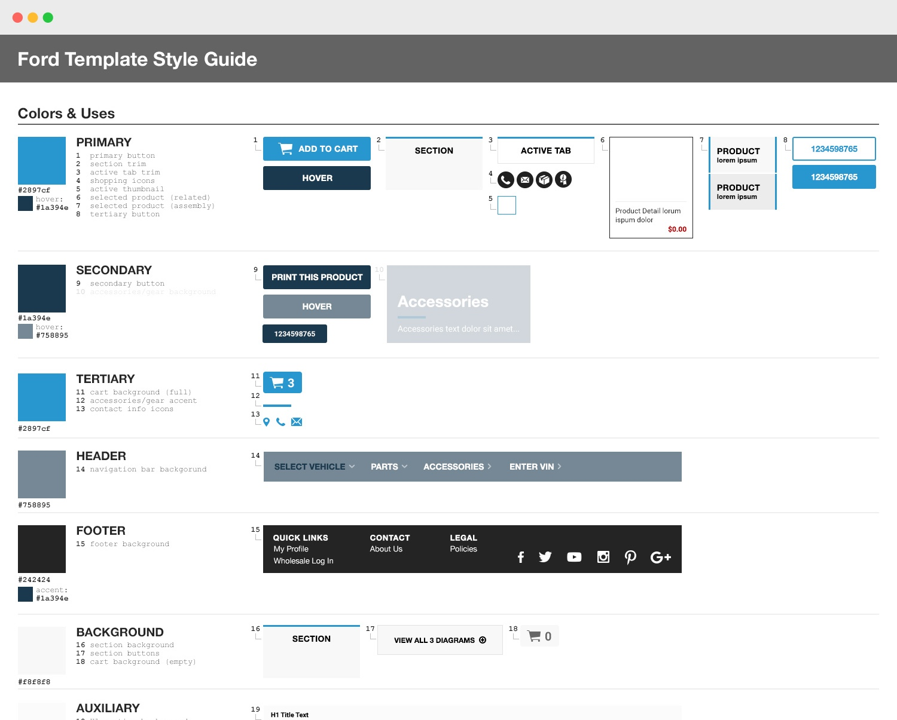
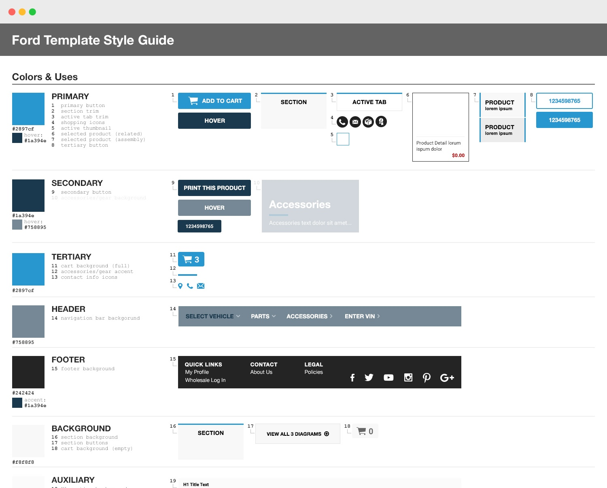

TEMPLATES BEFORE: HIGH MAINTENANCE
When it first began, SimplePart started out selling its platform to individual dealerships, each of which would get their own custom design. As the company grew, strategy shifted from onboarding individual dealers, to partnering with national OEMs. When focus started shifting to our “program” dealers, who all shared similar designs made for that specific program, maintaining dozens of custom designs for legacy dealers became a challenge. So, in order to help make maintenance easier, we launched an effort to templatize our non-program sites.
 
